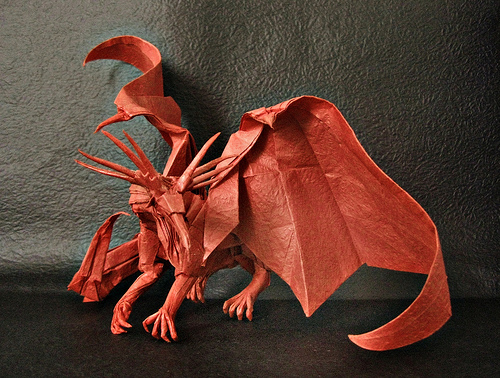

Satoshi Kamiya - "Ancient Dragon"

This is one of the most famous dragon models known as the Ancient Dragon. It was featured in Satoshi Kamiya's first book
and takes a grand total of 284-steps to complete! The paper to fold this beast needs to be atleast 60x60cm(35x35in),
which is also difficult.. because large origami paper is difficult to find!
Brian Chan - "Flying Grasshopper"
Brian Chan is a younger artist who makes some of the best bug models I have ever seen. This is his flying grasshopper, which
he created 2006 while attending MIT. The paper required to fold this critter is 25x25 inches.